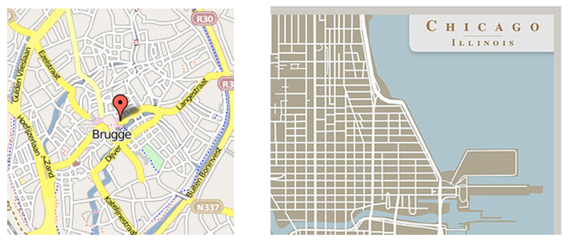
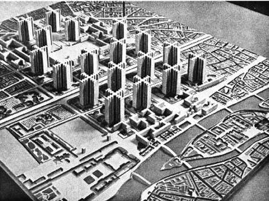
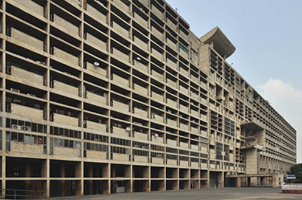
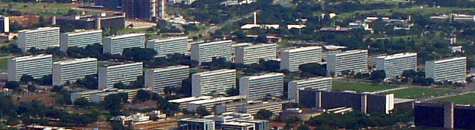
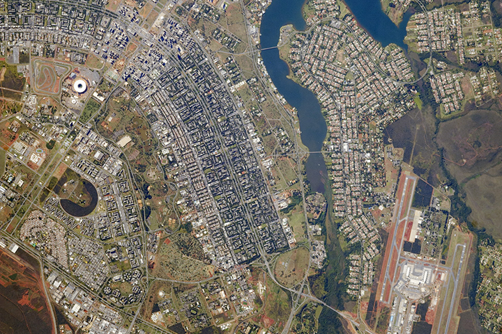

2017년 3월 16일
국가처럼 보기(Seeing Like A State)는 G.K. 체스터턴(G.K. Chesterton)이 문학 대신 경제사학의 길을 걸었다면 썼을 법한 책이다. 그가 그러지 않았기에, 제임스 스콧(James Scott)이 한 세기 후에 이 책을 써야만 했다. 기다린 보람이 있는 결과물이다.
스콧은 18세기 프로이센(Prussia)의 ‘과학적 임업’ 이야기로 시작한다. 계몽주의 합리주의자들은 농민들이 숲에 그냥 자라난 나무들을 멍청하게 베어내고 있다는 사실을 발견했다. 그들은 더 나은 아이디어를 냈다. 모든 숲을 밀어버리고, 그 자리에 단위 시간당 목재 생산량이 가장 높은 유럽가문비나무(Norway spruce)를 일정한 간격의 직사각형 격자 형태로 똑같이 심는 것이었다. 그렇게 하면 어느 날 도끼 하나 들고 들어가 시간당 수조 그루의 나무를 베어낼 수 있고, 원하는 만큼의 목재를 충분히 얻을 수 있을 터였다.
결과는 처참했다. 황폐해진 생태계는 주변 농민 마을의 생계를 지탱하던 야생 동물과 약초들을 더 이상 감당할 수 없었고, 마을들은 경제적 붕괴를 겪었다. 똑같은 나무들이 끝없이 늘어선 숲은 식물 질병과 산불이 번지기에 최적의 환경이었다. 게다가 토양을 유지하던 복잡한 생태적 과정들이 멈추면서, 한 세대가 지난 후 노르웨이 가문비나무(Norway spruce)들은 성장이 저해된 채 영양실조 상태가 되었다. 그런데도 웬일인지 관련된 모든 이들은 승진했고, '과학적 임업'은 유럽과 전 세계로 퍼져 나갔다.
그리고 이러한 패턴은 생물학적 체계뿐만 아니라 사회적 체계에서도, 역사를 통틀어 의심스러울 정도로 규칙적으로 반복된다.
자연스럽게 유기적으로 진화한 도시들은 대개 어두운 골목과 작은 상점들, 그리고 북적이는 거리들이 빽빽하게 뒤섞인 모습을 띤다. 현대의 과학적 합리주의자들은 더 나은 아이디어를 내놓았다. 넓은 대로로 구분된 동일한 형태의 거대한 브루탈리즘(Brutalist) 양식 아파트 단지들이 일정한 간격의 직사각형 격자 형태로 배치되고, 모든 기능이 세심하게 구획된 지구별로 분리된 도시였다. 그런데 웬일인지, 이런 새로운 합리적 도시들이 건설될 때마다 사람들은 그곳을 혐오했고, 더 유기적인 외곽 지역으로 이주하기 위해 온갖 수단을 동원했다. 그리고 또 웬일인지, 도시 계획가들은 승진하고 유명해졌으며, 자신들의 파괴적인 기법을 전 세계로 퍼뜨렸다.
옛날 옛적 유기적으로 진화한 농민 마을들은, 제각각 모양이 이상하고 비좁은 땅에서 모두가 동시에 쉰 가지나 되는 작물을 키우려 애쓰는 복잡하고 혼란스러운 모습인 경우가 많았다. 현대의 과학적 합리주의자들은 더 나은 아이디어를 냈는데, 바로 목적에 맞게 개량된 고수확 작물을 재배하며 (다 함께 따라 해보자) 일정한 간격의 직사각형 격자 형태로 배치된 거대 집단 기계화 농장이었다. 그런데 웬일인지, 이 거대 집단 농장들은 기존의 전통적 방식보다 에이커당 수확량이 낮았고, 이런 농장이 들어선 곳마다 기근과 대량 아사 사태가 뒤따랐다. 그럼에도 불구하고, 소련(USSR)의 사회주의 집단 농장이든, 미국의 거대 농업 기업이든, 혹은 제3세계의 광활한 바나나 농장이든, 정부들은 웬일인지 계속해서 더 "현대적인" 방식들을 밀어붙였다.
많은 동아프리카 원주민들의 전통적인 생활 방식은 유목 중심이었다. 이들은 복잡한 정글 지형에서 당혹스러울 정도로 다양하고 임시방편적인 규칙들에 따라 화전 농업을 하며 살아갔다. 아프리카 정부(식민 정부와 독립 정부 모두)의 현대적 과학 합리주의자들은 더 나은 아이디어를 냈는데, 바로 원주민들을 마을로 이주시키는 것이었다. 그곳에서 원주민들은 학교, 우물, 전기, 그리고 일정한 간격의 직사각형 격자 구조와 같은 현대적 편의시설을 누릴 수 있을 터였다. 하지만 웬일인지 이 마을들은 계속해서 실패했다. 작물은 죽어 나갔고, 경제는 붕괴했으며, 원주민들은 다시 정글 속으로 사라졌다. 그리고 또 웬일인지 아프리카 정부들은 원주민들을 다시 데려와 머물게 하려고 계속 시도했다. 설령 그 목적을 달성하기 위해 마을과 강제 수용소 사이의 경계를 흐려야 할지라도 말이다.

왜 이 모든 계획은 실패했을까? 그리고 더 중요한 것은, 실패했다는 사실이 무시하기 어려울 정도로 명백해졌음에도 불구하고, 왜 이 계획들은 찬사를 받고 보상을 받으며 계속 추진되었는가? 스콧(Scott)은 이에 대해 두 가지 답변을 제시한다.
이야기의 첫 번째 파트는 과학적 철학으로 위장한 미적 취향인 '하이 모더니즘(High Modernism)'이다. 하이 모더니스트들은 자신들이 가장 효율적이고 첨단적인 방식을 찾아내는 일을 한다고 주장했지만, 그들 대부분은 관련 수학이나 과학 지식이 거의 없었으며, 그저 사물들을 일정한 간격의 직사각형 격자 형태로 배치함으로써 합리적인 척 '라프(LARPing, 실생활에서 특정 역할에 몰입해 연기하는 것)'를 하고 있었을 뿐이다.
하지만 하이 모더니스트(High Modernists)들은 더 깊은 동기를 수행하는 장기말에 불과했다. 중앙집권적 국가는 세상이 '판독 가능(legible)'하기를, 즉 감시와 통제가 용이한 방식으로 배열되기를 원했다. 온전한 숲이 일정한 간격의 직사각형 격자로 심어진 노르웨이 가문비나무(Norway spruce) 숲보다 생산성은 더 높을지 모르나, 법규를 제정하거나 세금을 부과하기에는 더 까다로웠다.
국가는 어차피 실행하고 싶어 했던 전체주의적 계획들을 관철하기 위해, '더 큰 선(The Greater Good)'에 관한 하이 모더니스트(High Modernist)들의 진부한 말들을 은폐 수단으로 활용했다. 그 결과로 나타난 실험들은 모더니스트들이 내세운 인도주의적 목표 기준으로는 대개 실패였으나, 국가의 지휘 및 통제 목표 기준으로는 눈부신 성공이었다. 그렇게 우리는 무질서해 보이지만 정교하게 조정된 숨은 질서가 가득했던 시스템에서, 기능은 간신히 작동하지만 세금 걷기는 정말 편리한 시스템으로 서서히 옮겨갔다.
당신이 전근대 시대의 왕, 가령 중세 프랑스를 통치했던 루이(Louis) 왕들 중 한 명이라고 가정해 보자. 당신은 십자군 전쟁 같은 곳에 쓸 자금을 마련하기 위해 백성들에게 세금을 걷고 싶어 한다. 왕국의 거의 모든 사람이 농민이고, 농민들이 생산하는 것이라곤 곡물뿐이니 곡물로 세금을 걷으면 될 것이다. 그리 어렵지 않은 일 아닌가? 그저 사람들이 곡물을 몇 파인트(pint)나 생산했는지 측정하기만 하면 된다. 그런데...
18세기 파리의 파인트(pint)는 0.93리터에 해당했지만, 센앙몽탄(Seine-en-Montane)에서는 1.99리터였고, 프레시수틸(Precy-sous-Thil)에서는 무려 3.33리터에 달했다. 천의 길이를 재는 단위인 온(aune)은 소재에 따라 달랐으며(예를 들어 실크용 단위는 리넨용보다 작았다), 프랑스 전역에는 최소 17가지의 서로 다른 온이 존재했다.
좋다, 이건 정말 멍청한 짓이다. 그냥 모두에게 크기가 동일한 바구니를 나눠주고, 이제부터 바구니를 새로운 측정 단위로 삼으라고 말하면 될 일이다.
근대 초기 유럽의 거의 모든 곳에서는 바구니가 마모되거나, 부풀어 오르거나, 짜임새의 기교, 습도, 테두리의 두께 등에 따라 어떻게 조정될 수 있는지를 두고 끝없는 미시정치(micropolitics)가 펼쳐졌다. 일부 지역에서는 부셸(bushel) 및 기타 측정 단위의 지역 표준을 금속 형태로 제작하여 신뢰할 만한 관리에게 맡기거나, 아예 교회나 시청의 돌벽에 새겨 넣기도 했다. 하지만 여기서 끝이 아니었다. 곡물을 어떻게 부어야 하는지(어깨 높이에서 부어 어느 정도 압착시킬 것인가, 아니면 허리 높이에서 부을 것인가?), 습도는 어느 정도까지 허용할 것인지, 용기를 흔들어 내용물을 다져도 되는지, 그리고 마지막으로 가득 찼을 때 윗부분을 어떻게 평평하게 깎아낼 것인지 등이 길고도 치열한 논쟁의 대상이었다.
허, 중세 왕 노릇이라는 게 생각보다 쉽지 않군. 그냥 이 문제는 봉건 영주들에게 맡겨두는 게 나을까?
지금까지 서술한 지역적 측정 관행들은, 거리·면적·부피 등에 대한 지역적 개념이 국가가 선호하는 단일한 추상적 표준과는 다르고 더 다양했을지언정, 그럼에도 불구하고 객관적인 정확성을 지향하고 있었다는 인상을 줄 위험이 있다. 하지만 이러한 인상은 틀린 것이다. […]
측정의 정치학 중 상당 부분은 현대 경제학자가 말하는 봉건 지대의 '경직성(stickiness)'이라 부를 만한 현상에서 비롯되었다. 귀족이나 성직자 신분으로 권리를 주장하는 이들은 봉건적 공납금을 직접적으로 인상하는 데 종종 어려움을 겪었다. 각종 비용의 수준은 오랜 투쟁의 결과였으며, 관습적인 수준에서 조금만 인상되어도 전통을 위협하는 파기로 간주되었기 때문이다. 그러나 측정 단위를 조정하는 것은 동일한 목적을 달성하기 위한 우회적인 방법이 되었다.
예를 들어, 지역 영주는 농민들에게 곡물을 빌려줄 때는 작은 바구니를 사용하고, 갚을 때는 더 큰 바구니로 상환할 것을 요구할 수 있었다. 그는 제분(영주가 독점한 권한)을 위해 접수하는 곡물 자루의 크기를 은밀하게, 혹은 대담하게 키우는 한편, 밀가루를 나누어 줄 때 사용하는 자루의 크기는 줄일 수도 있었다. 또한 봉건적 공납금은 더 큰 바구니로 걷고, 현물 임금은 더 작은 바구니로 지급했을 것이다. 이렇게 하면 봉건적 공납과 임금을 규정하는 공식적인 관습(예를 들어, 특정 토지의 수확물에서 동일한 수의 밀 자루를 요구하는 것)은 그대로 유지되지만, 실제 거래는 점점 더 영주에게 유리하게 흘러가게 된다. 이러한 수작의 결과는 결코 사소하지 않았다. 쿨라(Kula)의 추산에 따르면, 이른바 '봉건적 반동(reaction feodale)'의 일환으로 주요 봉건 지대인 타이유(taille)를 걷는 데 사용된 부셸(boisseau)의 크기는 1674년에서 1716년 사이에 3분의 1이나 증가했다.
좋다, 하지만 그렇다고 해서 다들 이걸 그다지 심각하게 받아들이지는 않겠지, 안 그런가?
[측정 단위의 변경으로 인한] 이러한 피해 의식은 혁명 직전 삼부회(Estates General) 회의를 위해 작성된 불만 사항 기록부(cahiers de doléances)에서도 분명하게 드러났다. […] 완전히 새로운 정치 체제가 제1원칙부터 창조되고 있던 전례 없는 혁명적 상황에서, 통일된 도량형을 법제화하는 것은 분명 그리 어려운 일이 아니었을 것이다. 혁명 법령은 다음과 같이 기록하고 있다. “단 하나의 공정한 척도만을 바랐던 민중의 수백 년 된 꿈이 마침내 이루어졌다! 혁명이 국민에게 미터를 선사했다!”
좋다, 그러니까 결국 (단두대로 끌려가며 당신은 생각한다), 그게 정말 중요한 문제였던 모양이다.
어쩌면 곡물에 세금을 매기지 말았어야 했을지도 모른다. 대신 토지에 세금을 매겨야 했을 것이다. 결국 곡물을 키워내는 것은 토지니까. 그저 사람들이 각각 얼마만큼의 땅을 소유하고 있는지만 파악한다면, 거기서부터 적절한 세액을 산출해낼 수 있을 것이다.
그러니까, 음, 농민 여러분, 각자 땅을 얼마나 가지고 계십니까?
관습적인 토지 보유 관행의 가상 사례를 살펴보면, 이러한 관행들을 현대적 지적도(cadastral map, 세금 산정에 적합한 토지 조사도)라는 뼈대만 남은 체계에 통합시키는 것이 얼마나 어려운 일인지 잘 보여줄 수 있을 것이다. [...]
주 성장기 동안 가족들이 경작지 필지에 대해 용익권(usufruct rights)을 갖는 공동체를 상상해 보자. 하지만 심을 수 있는 작물은 특정 종류로 제한되며, 7년마다 용익지는 각 가족의 규모와 노동 가능 성인의 수에 따라 거주 가족들에게 재분배된다. 주 성장기 작물을 수확하고 나면 모든 경작지는 공유지로 되돌아가며, 이곳에서 어떤 가족이든 이삭을 줍거나 가금류와 가축을 방목하고, 심지어 빠르게 자라는 건기 작물을 심을 수도 있다. 마을이 공동으로 보유한 목초지에 가금류와 가축을 방목할 권리는 모든 지역 가족에게 부여되지만, 방목 가능한 동물의 수는 가족 규모에 따라 제한되며, 특히 사료가 부족한 가뭄 든 해에는 더욱 엄격히 제한된다. 방목권을 사용하지 않는 가족은 이를 다른 마을 주민에게 줄 수는 있지만, 외부인에게 줄 수는 없다. 모든 이는 일반적인 가족 필요를 위해 땔감을 채집할 권리가 있으며, 마을 대장장이와 제빵사에게는 더 많은 할당량이 주어진다. 마을 삼림에서 나온 산물을 상업적으로 판매하는 것은 금지된다.
심어진 나무와 그 나무가 맺은 열매는 현재 어디서 자라고 있든 그것을 심은 가족의 소유다. 하지만 그런 나무에서 떨어진 열매는 그것을 줍는 사람의 소유가 된다. 가족이 나무를 베거나 폭풍으로 나무가 쓰러졌을 때, 줄기는 해당 가족의 소유가 되고, 가지는 인접한 이웃의 소유가 되며, '꼭대기 부분'(잎과 잔가지)은 그것을 가져가는 가난한 마을 주민의 소유가 된다. 아이가 있는 과부나 징집된 남성의 부양가족이 사용하거나 임대할 수 있도록 별도의 토지가 마련되어 있다. 토지와 나무에 대한 용익권은 마을 내 누구에게나 임대할 수 있으며, 마을 외부 사람에게 임대할 수 있는 유일한 경우는 공동체 내에서 아무도 그 권리를 주장하려 하지 않을 때뿐이다. 흉작으로 인해 식량 부족이 발생하면, 이러한 합의 사항 중 상당수가 재조정된다.
있잖아요, 그냥 전부 다 10필지씩 가진 걸로 적겠습니다. 땅 10필지씩. 다들 괜찮으시죠? 좋습니다. 모두에게 땅 10필지씩 준 걸로 치고, 그냥 다음 마을로 넘어가죠.
노보셀로크(Novoselok) 마을은 경작, 방목, 임업이 어우러진 다양한 경제 구조를 가지고 있었다… 복잡하게 얽힌 좁고 긴 땅(strips)들은 마을의 각 가구가 모든 생태 구역에서 땅을 한 필지씩 가질 수 있도록 설계되었다. 개별 가구는 많게는 10개에서 15개의 서로 다른 필지를 보유했는데, 이는 마을의 생태 구역과 미세 기후를 대표하는 일종의 표본 집합과 같았다. 이러한 분배 방식은 가족의 리스크를 신중하게 분산시켰으며, 가족 구성원이 늘거나 줄어듦에 따라 때때로 토지 재분배가 이루어졌다… 토지 필지들은 대체로 직선이며 서로 평행했기에, 면적 수치를 일일이 계산할 필요 없이 밭의 한쪽 면을 따라 작은 말뚝만 옮기면 조정이 가능했다. 밭의 반대편이 평행하지 않은 경우에는, 해당 필지가 밭의 좁은 쪽이나 넓은 쪽에 위치한다는 점을 보완하기 위해 말뚝의 위치를 조정했다. 불규칙한 모양의 밭은 면적이 아니라 수확량에 따라 나누어졌다.
…음. 이건 잘 안 될 것 같다. 반대로 해보자. 토지를 지도에 표시하는 대신, 그냥 마을 사람들의 이름이 적힌 명단을 받아서 거기서부터 시작하는 거다.
오직 부유한 귀족들만이 고정된 성(surname)을 가지는 경향이 있었다… [영국의] 십일조나 인두세 징수원이 남성 인구의 90%가 단 여섯 개의 기독교식 이름(존, 윌리엄, 토마스, 로버트, 리처드, 헨리)만을 사용하고 있는 상황에 직면했을 때 겪었을 딜레마를 상상해 보라.
좋다, 알겠다. 그것도 방법이 아니겠지. 각 유산에 부과할 세금 부담을 평가하기 위해 우리가 할 수 있는 다른 무언가가 분명히 있을 것이다. 고정관념을 깨고, 수단과 방법을 가리지 말고 쥐어짜 보자!
[18세기] 프랑스에서 시행된 창문세(door-and-window tax)가 아주 적절한 사례다. 이 세금의 창시자는 주거지의 창문과 문 개수가 집의 크기에 비례한다고 판단했을 것이다. 그렇게 되면 세무 조사관이 굳이 집 안으로 들어가 치수를 잴 필요 없이, 그저 문과 창문의 개수만 세면 되기 때문이다.
단순하고 실행 가능한 공식이라는 점에서는 천재적인 발상이었으나, 그에 따른 결과가 없지는 않았다. 이후 농민들의 주거지는 이 공식에 맞춰 개구부를 최대한 줄이는 방향으로 설계되거나 개조되었다. 세수 손실은 개구부당 세율을 높여 보전할 수 있었을지 모르나, 국민 건강에 미친 장기적인 악영향은 한 세기가 넘도록 지속되었다.
거의 비슷하다.
이 이야기의 교훈은 다음과 같다. 전근대 국가들은 시민들에게 효과적으로 세금을 징수할 능력이 매우 제한적이었다. 앞서 언급한 문제들—표준화되지 않은 측정 단위, 표준화되지 않은 재산권, 표준화되지 않은 인명—외에도 몇 가지를 더 추가할 수 있다. 당시의 국가 언어란 잔인한 허구에 불과했다. 지역 '방언'들은 마치 스페인어와 포르투갈어만큼이나 서로 달랐기에, 마을 주민들은 세금 징수원의 말을 이해조차 못 했을 수도 있다. 무엇보다 최악인 것은, 17세기 전까지 프랑스에는 인구 조사라는 개념 자체가 없었으므로, 인구수나 마을 수가 얼마나 되는지에 대한 제대로 된 파악조차 불가능했다는 점이다.
왕들은 보통 이 문제를 세금 징수를 지역 영주들에게 맡김으로써 해결했다. 영주들이야 자신의 영지가 가진 특수성을 잘 알고 있을 것이기 때문이다. 하지만 단계 하나만으로는 충분하지 않을 때가 많았다. 만약 왕은 공작들만 알고, 공작은 남작들만 알며, 남작은 마을 이장들만 알고, 정작 농민들에 대해 실제로 아는 사람은 마을 이장뿐이라면, 세금을 걷기 위해 네 단계의 사슬이 필요하게 된다. 이 사슬의 각 연결 고리들은 가능한 한 많이 걷어내고, 걸리지 않을 정도로만 최소한으로 상납하려는 유인을 갖게 된다. 그 결과, 한쪽 끝에서는 농민들이 허리가 휠 정도의 징벌적 세금을 내고 있었고, 다른 쪽 끝에서는 왕실 재무관이 곰팡이 핀 빵 반 덩어리를 왕에게 건네며 이렇게 말하는 상황이 벌어지는 것이다. “폐하, 여기 있습니다. 보아하니 이것이 프랑스에 남은 곡식의 전부인 모양입니다.”
따라서 왕들은 처음부터 국가를 '판독 가능(legible)'하게 만들 유인이 있었다. 즉, 모든 사람에 대한 모든 정보를 쉽게 파악하고 세금을 징수하거나 재확인할 수 있도록 국가를 체계적으로 조직하고 색인화하려 한 것이다. 동시에 귀족들 역시 자신들의 일자리를 잃지 않기 위해 왕의 이러한 시도를 좌절시킬 유인이 있었다. 그리고 국가가 세금을 더 쉽게 걷고 자신들의 삶에 간섭하게 만드는 모든 것은 악재라고 생각한 평민들 또한 대개 이에 저항했다.
스콧은 이 점을 언급하지 않았지만, 성경의 역사라는 맥락에서 이 글을 읽는 것은 꽤 흥미롭다. 성경을 쓴 사람이 인구 조사(census)를 그리 좋아하지 않았던 모양이다. 역대상 21장을 보면 다음과 같다.
사탄이 이스라엘을 대적하여 일어나 다윗으로 하여금 이스라엘 백성의 수를 세게 하였다. 이에 다윗이 요압과 군대 지휘관들에게 말했다. “남쪽 브엘세바(Beersheba)부터 북쪽 단(Dan)까지 이스라엘의 모든 백성의 수를 세어, 그 수가 얼마나 되는지 내게 보고하라.”
그러나 요압이 대답했다. “여호와께서 그의 백성의 수를 백 배나 더하시기를 원하나이다! 그런데 나의 주 왕이시여, 어찌하여 이런 일을 하려 하시나이까? 그들이 모두 왕의 종들이 아니옵니까? 어찌하여 이스라엘이 죄를 짓게 하시나이까?”
그럼에도 왕이 인구 조사를 강행하라 고집하자, 요압은 온 이스라엘을 다니며 백성의 수를 세었다. 그 후 예루살렘으로 돌아와 다윗에게 그 수를 보고했다. 온 이스라엘에서 칼을 쓸 줄 아는 용사가 1,100,000명이었고, 유다(Judah)에는 470,000명이 있었다. 다만 요압은 왕이 자신에게 시킨 일에 너무나 괴로워했기에, 레위(Levi) 지파와 베냐민(Benjamin) 지파는 인구 조사에 포함하지 않았다.
하나님은 이 인구 조사를 매우 불쾌하게 여기셨고, 그로 인해 이스라엘을 징벌하셨다. 이에 다윗이 하나님께 말했다. “내가 이 인구 조사를 함으로써 큰 죄를 지었나이다. 이 어리석은 일을 행한 나의 죄를 용서하여 주소서.” 그러자 주께서 다윗의 선견자 갓(Gad)에게 말씀하셨다. 그 메시지는 이러했다. “가서 다윗에게 말하라. ‘주의 말씀이 이러하시다. 내가 네게 세 가지 선택지를 주리니, 이 벌 중 하나를 택하라. 그러면 내가 그것을 네게 내리리라.’”
갓이 다윗에게 와서 말했다. “주께서 당신에게 주신 선택지는 이러합니다. 3년 동안의 기근, 혹은 3개월 동안 원수의 칼에 의한 파멸, 아니면 3일 동안 주의 천사가 이스라엘 땅 전역에 황폐함을 가져오는 심한 전염병 중 하나를 택하십시오. 나를 보내신 주님께 어떤 대답을 드려야 할지 결정하십시오.”
“나는 정말 절망적인 상황에 처했구나!” 다윗이 갓에게 대답했다. “차라리 내가 주의 손에 떨어지게 하라. 주의 긍휼은 매우 크시니, 나를 사람의 손에 떨어지게 하지 마소서.”
이에 주께서 이스라엘에 전염병을 내리셨고, 그 결과 70,000명이 죽었다.
(관련 내용: 스콧은 예루살렘의 아이히만(Eichmann In Jerusalem)과 동일한 홀로코스트 생존율 데이터를 일부 검토했으나, 이를 훨씬 더 납득 가능하게 풀어냈다. 국가의 가독성(legibility)이 높을수록 유대인들에게는 더 불리했다는 것이다. 네덜란드에서 유대인 생존율이 매우 낮았던 이유 중 하나는 네덜란드 정부가 유대인이 얼마나 되는지, 그리고 어디에 사는지에 대해 매우 정확한 인구 조사 기록을 가지고 있었기 때문이다. 때로는 관리들이 인구 조사 기록을 말 그대로 불태워버림으로써 유대인들을 구하기도 했다).
가독성(legibility)을 증진하려는 중앙 정부의 프로젝트들은 언제나 두 걸음 나아가고 한 걸음 물러서는 식이었다. 정부는 권력이 가장 강력한 수도 인근에서부터 아주 점진적으로 그 영향력을 확대한다. 정부가 등을 돌리는 즉시 방해하려 들 것이 뻔한 농민들을 거쳐, 만약 정부의 칙령이 살아남는다면 그제야 오지로 그 범위를 넓혀가는 식이다.
스콧은 성(surname)이 어떻게 퍼져나갔는지 설명한다. 농민들은 고정된 성을 갖는 것을 좋아하지 않았다. 그들 나름의 체계는 그들에게 꽤 합리적이었다. 제빵사 존은 존 베이커(John Baker)가 되었고, 대장장이 존은 존 스미스(John Smith)가 되었으며, 언덕 아래 사는 존은 존 언더힐(John Underhill)이 되었고, 키가 정말 작은 존은 존 쇼트(John Short)가 되었다. 동일 인물이라도 대장장이라는 신분이나 출신지가 더 중요한 상황에 따라, 어떤 맥락에서는 존 스미스로, 다른 맥락에서는 존 언더힐로 불렸을 수도 있다.
하지만 정부는 마을 내에서 중복되지 않는 단 하나의 고유한 상시 성명을 모두에게 부여하고, 누가 누구와 같은 가족인지 추적하겠다고 고집했다. 이에 대한 저항은 격렬했다.
우리가 가진 증거들에 따르면, 국가의 재정적 영향력이 미치는 거리에서 멀어질수록 어떤 종류의 성(second name)이든 그 사용 빈도가 낮아졌다. 피렌체(Florence) 가구의 3분의 1이 성을 사용했던 반면, 중소 도시에서는 그 비율이 5분의 1로, 시골 지역에서는 10분의 1로 떨어졌다. 토스카나(Tuscany)의 가장 외딴 빈곤 지역, 즉 관료 체제와 접촉이 가장 적었을 지역에서 가족 성씨가 고착된 것은 17세기가 되어서였다. […]
국가의 지도 제작 관행과 마찬가지로, 국가의 명명 관행은 필연적으로 세금(노동력, 군 복무, 곡물, 세입)과 연관되어 있었으며, 따라서 민중의 저항을 불러일으켰다. 1381년의 거대한 영국 농민 봉기(흔히 왓 타일러의 난(Wat Tyler Rebellion)이라 불리는)는 전례 없는 10년간의 인구 등록과 인두세 산정 때문이었던 것으로 보인다. 영국 농민이나 토스카나 농민 모두에게, 모든 성인 남성을 대상으로 한 인구 조사는 파멸적이지는 않더라도 분명 불길하게 보였을 수밖에 없었다.
유사한 문제들이 수백 년 후 유럽이 다른 대륙들을 식민지화하기 시작했을 때 다시 반복되었다. 그들은 또다시 자신들이 보기에 불분명하고 과세에 부적합한 명명 체계를 가진 인구 집단과 마주했다. 하지만 식민지 국가들은 중세의 상대적으로 약했던 봉건 군주제보다 피지배층에 대해 더 강력한 통제권을 쥐고 있었기에, 때로는 우스꽝스러울 정도로 단번에 이 문제를 해결할 수 있었다.
이러한 사례를 가장 잘 보여주는 곳이 바로 스페인 통치하의 필리핀이다. 필리핀인들은 1849년 11월 21일의 칙령에 따라 영구적인 히스패닉 성씨를 갖도록 지시받았다. […]
각 지역 관리는 관할 구역에 충분한 양의 성씨 목록을 지급받았으며, “배포가 알파벳 순서대로 이루어지도록 주의”해야 했다. 실제로 각 마을에는 알파벳순으로 정리된 [카탈로그]의 일부 페이지들이 할당되었고, 그 결과 마을 전체 주민의 성씨가 모두 같은 알파벳으로 시작하는 상황이 벌어졌다. 지난 150년 동안 인구 유입이 거의 없었던 지역에서는 이러한 행정적 실험의 흔적이 여전히 풍경 속에 고스란히 남아 있다. “예를 들어, 비콜(Bikol) 지역에서는 1849년 당시 단일 관할 구역이었던 알바이(Albay), 소르소곤(Sorsogon), 카탄두아네스(Catanduanes) 주 전역에 걸쳐 알파벳 전체가 마치 꽃다발처럼 펼쳐져 있다. 주도에서 A로 시작하여, 타바코(Tabaco)를 지나 위키(Wiki)까지 이어지는 해안가 마을들은 B와 C로 표시된다. 다시 돌아와 소르소곤 해안을 따라 E부터 L까지의 글자를 추적하고, 다라가(Daraga)에서 이라야(Iraya) 계곡을 따라 M으로 시작해 폴랑구이(Polangui)와 리본(Libon)의 S에서 멈춘 뒤, 카탄두아네스 섬을 빠르게 한 바퀴 돌며 알파벳을 마무리한다.”
이 칙령이 해결하고자 했던 혼란은 주로 행정관과 세금 징수원의 관점에서의 혼란이었다. 그들은 보편적인 성씨가 사법, 재정, 공공질서의 행정을 용이하게 할 뿐만 아니라, 결혼 예정자들이 서로의 혈연 관계를 계산하는 것을 더 간단하게 만들어 줄 것이라고 믿었다. 하지만 [총독] 클라베리아(Claveria) 같은 공리주의적 국가 건설자에게 궁극적인 목표는 피통치자와 납세자들의 완전하고 판독 가능한(legible) 명단을 확보하는 것이었다.
사실 이 상황은 알파벳순으로 정리했다는 말만 들어서는 짐작할 수 없을 정도로, 훨씬 덜 귀엽고 덜 웃긴 일이었다.
만약 필리핀 사람들이 새로 부여받은 성(last name)을 무시하기로 했다면 어떻게 되었을까? 클라베리아(Claveria)는 이미 이런 가능성을 염두에 두고 있었으며, 이름들이 확실히 정착하도록 조치를 취했다. 학교 교사들은 학생들이 공식적으로 기재된 가족 성 외의 다른 이름으로 서로를 부르거나, 심지어는 서로의 다른 이름을 아는 것조차 금지하도록 명령받았다. 이 규칙을 열정적으로 적용하지 않는 교사들은 처벌 대상이었다. 학교 등록률이 극히 낮았다는 점을 고려하면, 아마 더 효과적이었던 조치는 성직자와 군 관계자, 그리고 민간 공무원들이 공식 성이 사용되지 않은 그 어떤 문서나 신청서, 청원서, 증서도 접수하지 못하도록 한 규정이었을 것이다. 다른 이름을 사용한 모든 문서는 무효 처리되었다.
이와 유사한 조항들은 지역 방언을 승인된 국가 표준어로 대체하는 결과를 낳았다. 학생들은 학교에서 국가 표준어만을 배울 수 있었으며, 토착어를 사용할 경우 처벌을 받았다. 모든 공식 문서는 국가 표준어로 작성되어야 했고, 이는 과거에 스스로 법적 사무를 처리할 수 있었던 농민들이 이제는 표준어를 구사하는 중개인에게 의존해야 함을 의미했다. 스콧(Scott)은 프랑스에서 나타난 이러한 효과에 대해 다음과 같이 말한다.
지역적 지식을 즉각적으로 가치 절하하고, 공식적인 언어 체계를 마스터한 이들에게 특권을 부여하는 데 이보다 더 효과적인 공식은 상상하기 어려울 것이다. 그것은 거대한 권력의 이동이었다. 프랑스어 능력이 부족한 주변부 사람들은 입이 막힌 채 소외되었다. 이제 그들에게는 새로운 국가 문화로 안내해 줄 지역 가이드가 필요해졌으며, 그 가이드는 변호사, 공증인, 교사, 서기, 그리고 군인의 모습으로 나타났다.
따라서 근대 초기라는 시기는, 모든 것을 수치화하고 표준화하려는 국가와 이를 허용하지 않으려는 시민들 사이의 불안한 휴전 상태로 정의된다. 여기서 하이 모더니즘(High Modernism)이 등장한다. 스콧(Scott)은 이를 다음과 같이 정의한다.
과학적·기술적 진보, 생산의 확대, 인간 욕구의 충족 증대, 자연(인간 본성 포함)의 정복, 그리고 무엇보다도 자연 법칙에 대한 과학적 이해에 부합하는 사회 질서의 합리적 설계에 대해 품은 강한, 어쩌면 근육질이라고까지 할 법한 자신감의 버전
…이런 식의 표현은 내게는 약간 ‘학술적’인 냄새가 너무 많이 난다. 외연적 정의를 사용하는 편이 더 나을 것이다. 표준화, 헨리 포드(Henry Ford), 모든 것을 운영하는 최선의 방법으로서의 은유가 된 공장, 자연의 정복, 새로운 소비에트 인간(New Soviet Man), 당신보다 더 잘 안다고 믿는 대학 졸업장 소지자들, 과거의 어리석고 비합리적인 전통들을 쓸어버리는 것, 멋진 신세계(Brave New World), 모두가 기숙사에서 살며 매일 정확히 2,000칼로리의 ‘표준화 식품(Standardized Food Product (TM))’을 섭취하는 삶, ‘당신을 위해서’라는 명목으로 행해지는 모든 것, 번쩍이는 모더니즘 마천루, ‘미래의 X’, 깨어 있지 못한 대중이 ‘미래의 X’에 저항한다는 불평, 만약 깨어 있지 못한 대중이 ‘미래의 X’를 거부한다면 ‘그들 자신을 위해’ 재교육받아야 한다는 요구, 그리고 (물론) 일정한 간격으로 배치된 직사각형 격자들.
(아마도 가장 적절한 정의는 “G. K. 체스터턴(G. K. Chesterton)이 싫어했던 모든 것”일 것이다.)
마치 청소년 디스토피아 소설처럼 들리겠지만, 스콧(Scott)은 지난 세기 전환기에 이러한 이데올로기가 얼마나 강력했는지에 대한 연구 결과로 나를 놀라게 했다. 20세기 초반의 위대한 사상가들 중 일부는 자기 패러디 수준으로 하이 모더니즘(High Modernist)에 심취해 있었는데, 이는 청소년 디스토피아 소설가조차 설정이 너무 과한 게 아닌가 걱정하기 시작할 정도의 수준이었다.
최악 중의 최악은 프랑스의 예술가이자 지식인이자 건축가였던 르 코르뷔지에(Le Corbusier)였다. 소련은 그에게 모스크바를 재설계할 계획을 세워달라고 요청했다. 그는 다음과 같은 계획을 내놓았다. 모든 사람을 쫓아내고, 도시 전체를 불도저로 밀어버린 뒤, 합리적인 원칙에 따라 처음부터 다시 설계하자는 것이었다. 예를 들어, 타인의 비합리적인 측정 체계를 사용하는 대신, 르 코르뷔지에가 직접 고안한 모듈러(Modulor)라는 새로운 측정 체계를 사용하려 했는데, 이는 프랑스인의 평균 키와 황금비를 결합한 것이었다.

소비에트 연방은 거절하기로 했다. 그 계획은 스탈린조차 생각하기에 너무 극단적이었고 기존 제도를 지나치게 파괴적이었기 때문이다. 하지만 르 코르뷔지에(Le Corbusier)는 굴하지 않고 도면의 '모스크바'라는 단어를 '파리'로 바꾸어 프랑스 정부에 제시했다(프랑스 정부 역시 거절했다). 그의 설계 중 일부 요소들은 결국 인도 찬디가르(Chandigarh)에 구현되었다.

르 코르뷔지에(Le Corbusier)는 지역마다 다른 조건, 기존의 구조물, 그리고 의견을 내고자 하는 주민들 따위의 변수 앞에서도 자신의 계획을 고수하려는 집착에 대해 도전을 받았다. 그것은 일종의 독재가 아니냐는 것이었다. 이에 그는 다음과 같이 답했다.
독재자는 한 개인을 의미하는 것이 아니다. 그것은 바로 '계획'이다. 문제가 명확하고 완전하며, 필수적인 조화를 이룬 상태로 제기되기만 하면 곧바로 해결책을 제시해 줄, 정확하고 현실적이며 정밀한 계획 말이다. 이 계획은 시장실이나 시청의 소란함, 유권자들의 외침이나 사회적 피해자들의 한탄과는 멀리 떨어진 곳에서 수립되었다. 그것은 평온하고 명석한 정신들에 의해 설계되었다. 오직 인간적 진리만을 고려한 계획이다. 현재의 모든 규정과 기존의 관습, 경로들은 모두 무시되었다. 현행 헌법하에서 실행 가능 여부 따위는 고려 대상이 아니었다. 이것은 인간을 위해 운명 지어졌으며, 현대 기술로 실현 가능한 생물학적 창조물이다.
이른바 "평온하고 명징한 정신"을 낳은 이 "생물학적 창조"의 정체는 대체 무엇이었을까? 그것은... 아마도, 어쩌면, 일정한 간격으로 배치된 직사각형 격자무늬였을지도 모른다.
사람들은 이렇게 말할 것이다. “말이야 쉽지! 하지만 당신의 교차로는 전부 직각뿐이잖아. 우리 도시의 현실을 구성하는 그 무한한 변수들은 어떻게 할 건가?” 하지만 바로 그 점이 핵심이다. 나는 이 모든 것들을 제거한다. 그렇지 않으면 우리는 결코 아무 데도 도달하지 못할 것이기 때문이다.
벌써부터 쏟아지는 항의의 폭풍과 비꼬는 조롱이 들리는 듯하다. “멍청이, 미치광이, 바보, 허풍쟁이, 정신병자” 등이겠지. 정말 고맙지만, 그래도 달라지는 건 없다. 나의 출발점은 여전히 동일하다. 나는 직각 교차로를 고집한다. 여기 제시된 교차로들은 모두 완벽하다.
스콧은 르 코르뷔지에(Le Corbusier)를 하이 모더니즘(High Modernism)의 다섯 가지 원칙을 구현하는 전형으로 제시한다.
우선, 기존의 기반 시설과는 그 어떤 타협도 있을 수 없다. 그것들은 건축학 학위도 없는 미신적인 사람들에 의해 설계되었거나, 적어도 아주 오래전에 학위를 취득하여 현대적 감각이 부족한 이들에 의해 만들어졌기 때문이다. 영광스러운 미래를 위해 기존 시설을 더 완벽하게 밀어버릴수록 결과는 더 좋아질 것이다.
둘째, 인간의 필요는 추상화하고 계산할 수 있다. 인간에게는 X만큼의 식량이 필요하다. X만큼의 물이 필요하다. X만큼의 빛이 필요하며, X의 속도로 이동하는 것을 선호하고, 직장에서 X마일 이내에 거주하기를 원한다. 이러한 필요는 실험을 통해 쉽게 계산할 수 있으며, 좋은 도시란 이러한 필요를 충족시키고 그와 상충하는 사소한 잡다함들은 무시하도록 설계된 도시이다.
셋째, 해결책은 곧 정답이다. 그것은 보편적이다. 모스크바(Moscow)를 위한 합리적 설계는 파리(Paris)를 위한 합리적 설계와 같으며, 이는 다시 인도 찬디가르(Chandigarh)를 위한 합리적 설계와 같다. 당연한 결과로, 이 모든 도시들은 정확히 똑같이 생겨야 한다. 산이나 호수 같은 장애물에 맞춰 설계를 조정하는 것이 어쩌면 허용될지도 모른다. 하지만 그것은 산을 깎고 호수를 메워 도시를 진정으로 최적화한다는 합리적 정답을 따르기에 예산이 너무 부족한 경우에만 해당한다.
넷째, 모든 관련 규칙은 테크노크라트(technocrats)에 의해 명시적으로 결정되어야 하며, 하급자들은 이를 글자 그대로 따라야 한다. 이러한 규칙을 따르는 것이 직관에 의존하는 것보다 낫다. 이는 무언가를 태울 때 발생하는 열을 단순히 추측하는 것보다 물리학 법칙을 이용해 계산하는 것이 더 정확하며, 그저 내키는 대로 처방하는 것보다 증거 기반의 임상 알고리즘을 따르는 것이 더 나은 것과 마찬가지다.
다섯째, 관련 당사자들(예: 도시의 미래 시민들)로부터 얻거나 배울 수 있는 것은 전혀 없다. 당신은 이미 모든 관련 도시 매개변수의 정확한 수치를 계산해 낸, 건축학 학위를 가진 합리적인 현대 과학자다. 반면 그들은 '건축'이라는 단어의 철자조차 제대로 쓰지 못할 가능성이 큰 촌뜨기들이며, 하물며 건축에 유용한 기여를 하는 것은 말할 것도 없다. 그들은 아마 모든 결정을 미신이나 전통 같은 것에 기반해 내릴 것이며, 따라서 그들의 의견은 '그들 자신을 위해서' 무시되어야 한다.
르 코르뷔지에(Le Corbusier)에게 불공평한 평가를 내리지 않기 위해 덧붙이자면, 그의 과학적 합리주의 원칙들 중 상당수는 매우 타당해 보였다. 도로를 넓게 만들어 교통량을 충분히 수용하고 모든 건물에 빛이 잘 들게 하라. 직사각형 격자 구조를 사용하여 도시 내 이동을 더 쉽게 만들어라. 모든 것이 효율적이고 모두가 감당할 수 있는 가격이 되도록 불필요한 장식을 배제하라. 가장 저렴하고 튼튼한 재료인 콘크리트를 사용하라. 보행자가 차에 치이지 않도록 가능한 한 도로에서 격리하라. 거대한 아파트 타워를 세워 공간을 절약하고, 그렇게 확보된 개방된 공간을 아름다운 공원과 공공 광장으로 활용하라. 지역적 색채가 묻어나는 모든 것을 피하라. 민족주의는 전쟁으로 이어지며, 우리 모두는 동일한 인류라는 글로벌 공동체의 일원이기 때문이다. 꽤 그럴듯하게 들렸고, 실제로 수십 년 동안 도시 계획 학계 전체가 이 생각에 설득되었다.
그래서, 결과는 어떠했는가?
스콧은 브라질리아(Brasilia)의 사례를 든다. 브라질은 거의 비어 있던 중부 지역을 개발하고자 했고, 아무것도 없는 황무지에 새로운 수도를 건설하기로 결정했다. 그들은 완벽하고 과학적이며 합리적인 도시를 짓기 위해 르 코르뷔지에(Le Corbusier)의 제자 세 명, 그중에서도 특히 오스카 니마이어(Oscar Niemeyer)를 고용했다. 조건은 이보다 더 좋을 수 없었다. 땅은 이미 때 묻지 않은 상태였기에, 파리를 먼저 불도저로 밀어버릴 필요가 없었다. 길을 가로막는 성가신 산이나 숲도 없었다. 가용 예산은 수백억 달러에 달했다. 건축가들은 이 도전에 응답했고, 세계 최대의 하이 모더니즘(High Modernist) 도시를 건설해 냈다.

하지만 완공 후 20년이 지났음에도, 50만 명을 수용할 수 있는 이 도시의 거주 용량은 절반밖에 차지 않았을 뿐이었다. 입지 문제는 아니었다. 주변 교외 지역에는 거의 100만 명에 달하는 인구가 모여 살고 있었기 때문이다. 사람들은 브라질리아(Brasilia) 근처에 살고 싶어 했다. 다만 니마이어(Niemeyer)와 코르뷔지에 추종자들(Corbusierites)이 지어놓은 구역에서 살고 싶지 않았을 뿐이다.

무슨 일이 일어난 것일까? 스콧(Scott)은 다음과 같이 쓴다.
다른 도시에서 브라질리아(Brasilia)로 이주한 이들 대부분은 이곳이 "군중이 없는 도시"라는 사실을 발견하고 경악한다. 사람들은 브라질리아에 거리 생활의 북적임이 부족하며, 보행자를 위한 보도를 활기차게 만드는 분주한 길모퉁이나 길게 늘어선 상점 외벽이 전혀 없다고 불평한다. 그들에게 브라질리아의 설립자들은 도시를 계획한 것이 아니라, 오히려 도시가 생겨나는 것을 막으려 계획한 것처럼 보일 정도다. 그들이 가장 흔히 사용하는 표현은 브라질리아에 "길모퉁이가 부족하다"는 것인데, 이는 주거지와 공공 카페, 식당, 그리고 여가와 업무, 쇼핑을 위한 공간들이 밀집된 동네의 복잡한 교차점들이 없다는 뜻이다.
브라질리아가 일부 인간적 필요—업무 공간과 주거 공간의 기능적 분리, 그리고 이 둘과 상업 및 오락 공간의 분리—는 잘 충족시켜 줄지 모르나, 슈퍼콰드라(superquadra, 대규모 주거 블록) 사이의 거대한 공백과 오직 자동차 교통만을 위해 설계된 도로 시스템은 길모퉁이의 소멸을 필연적인 결과로 만들었다. 이 계획은 교통 체증을 제거했다. 하지만 동시에 홀스턴(Holston)의 제보자 중 한 명이 "사회적 친목의 핵심"이라고 불렀던, 반갑고 친숙한 보행자들의 정체 현상마저 제거해 버렸다.
1세대 거주자들이 만들어낸 용어로, 대략 '브라질리아병'을 의미하는 브라질라이트(brasilite)라는 단어는 그들이 겪은 트라우마를 잘 포착하고 있다. 가상의 임상적 상태를 흉내 낸 이 용어는 브라질리아 삶의 표준화와 익명성에 대한 거부감을 내포한다. "그들은 다른 브라질 도시들의 야외 생활이 주는 즐거움—주의를 끄는 일들, 대화, 추파, 그리고 소소한 일상의 의례들—이 없는 매일의 삶에 대한 감정을 표현하기 위해 브라질라이트라는 용어를 사용한다." 누군가를 만나려면 보통 그들의 아파트나 직장에서 봐야 한다. 브라질리아가 행정 도시라는 초기 단순화 전제를 인정하더라도, 수도의 구조 자체에 밋밋한 익명성이 내재해 있다는 사실은 변함이 없다. 주민들에게는 리우(Rio)나 상파울루(Sao Paulo)에서 역사적으로 그랬듯, 자신들이 점유하여 활동의 특색을 각인시킬 수 있는 작고 접근 가능한 공간이 단순히 부족한 것이다. 물론 브라질리아 주민들이 자신들의 관습을 통해 도시를 수정할 시간이 많지 않았던 것은 분명하지만, 이 도시는 애초에 주민들의 노력에 상당히 완강하게 저항하도록 설계되었다.
"브라질라이트"라는 용어는 또한 구축된 환경이 그곳에 거주하는 이들에게 어떤 영향을 미치는지를 강조한다. 색채와 다양성이 넘치는 리우나 상파울루의 삶과 비교할 때, 밋밋하고 반복적이며 엄격한 브라질리아에서의 일상은 마치 감각 차단 탱크 속의 삶과 비슷했을 것이다. 하이 모더니즘(high-modernist) 도시 계획의 처방전은 형식적인 질서와 기능적 분리를 만들어냈을지는 모르나, 그 대가로 감각적으로 빈곤하고 단조로운 환경을 조성했으며, 이는 필연적으로 거주자들의 정신에 타격을 주었다.
브라질리아가 유발하는 익명성은 각 주거 슈퍼콰드라를 구성하는 전형적인 아파트들의 규모와 외관에서 극명하게 드러난다. 슈퍼콰드라 거주자들의 가장 빈번한 두 가지 불만은 아파트 블록들의 동일함과 주거지의 고립("브라질리아에는 집과 일밖에 없다")이다. 각 블록의 외벽은 엄격하게 기하학적이며 평등주의적이다. 어떤 아파트의 외관도 다른 아파트와 구별되지 않는다. 거주자가 개성 있는 손길을 더해 반공공적 공간을 만들 수 있는 발코니조차 없다.
브라질리아(Brasilia)가 흥미로운 이유는 그곳이 하이 모더니즘(High Modernist)의 계획도시 그 자체였기 때문이다. 대부분의 지역에서 모더니스트들이 도시 전체를 한꺼번에 손에 넣는 경우는 드물었다. 그들은 여러 교외 지역과 동네, 아파트 단지들을 짓기는 했다. 하지만 여기에는 괴리가 있었다. 대부분의 사람들은 하이 모더니즘 양식의 집을 사고 싶어 하지 않았고, 그런 동네에서 살고 싶어 하지도 않았다. 반면 대부분의 정부는 하이 모더니즘 양식의 주택과 동네에 자금을 지원하고 싶어 했는데, 이는 그들에게 영향을 미친 학자들이 그것이 현대적이고 과학적이며 합리적인 방식이라고 말했기 때문이다. 결국 하이 모더니스트들이 미국에 남긴 주요 유산 중 하나는 '프로젝트(projects, 미국의 공공주택 단지)'—즉, 어디서 살지 선택할 권리가 없는 가난한 사람들을 위해 정부가 자금을 지원한 공공주택—가 되었다.
나는 제인 제이콥스(Jane Jacobs)를 정말이지 단 한 번도 제대로 "이해"해 본 적이 없다. 원래 내 해석에 따르면, 그녀는 도시가 시끄럽고 북적이며 사람들로 가득 찬 것이 바람직하며, 사람들이 서로 상호작용하게 만들고 사생활을 누리지 못하게 하려면 일부러 복잡하고 통행하기 어려운 동네를 만들어야 한다고, 그리고 그 누구도 조용하고 쾌적한 곳에 사는 것이 허용되어서는 안 된다고 주장하는 사람이었다. (공교육 시스템 덕분에) 타인과의 상호작용을 강요당하고, 사생활이나 혼자만의 시간을 갖는 것이 의도적으로 어렵게 설계된 상황에 처해본 경험이 꽤 많은 사람으로서, 나는 제인 제이콥스가 그저 성격 파탄자일 뿐이라고 생각했다.
하지만 스콧은 나로 하여금 어느 정도 생각을 바꾸게 만들었다. 그는 그녀를 하이 모더니즘(High Modernism)의 매우 실질적인 과잉에 대응했던 인물로 복권시킨다. 그녀는 "이봐요, 사람들은 아기자기한 작은 동네에 사는 것을 좋아할지도 몰라요"라고 진정으로 말한 첫 번째 사람이었다. 그녀의 불만은 사생활이나 질서 그 자체를 향한 것이 아니라, 사람들이 경험적으로 혐오했던 그러한 개념들의 극단적인 하이 모더니즘적 왜곡을 향한 것이었다. 그리고 그녀의 이력을 보면 이 모든 것이 충분히 이해가 간다. 그녀는 공공 주택 단지에 거주하며 브라질 사람들과 비슷한 불만을 가졌던 가난한 아프리카계 미국인들을 취재하는 기자로 커리어를 시작했기 때문이다.
르 코르뷔지에주의(Le Corbusierism)에 대한 그녀의 비판은 대체로 예상 가능한 수준이었으나, 스콧은 앞서 언급한 모더니스트들의 관점과 대조하여 유용한 몇 가지 지점들을 추출해 낸다.
우선, 기존의 구조물들은 사회적 목표를 달성하려는 사람들이 만들어낸 진화된 유기체와 같다. 여기에는 그 어떤 개인이 공식적으로 열거할 수 있는 것보다 훨씬 더 많은, 인간의 필요와 욕구에 관한 지혜가 담겨 있다. 모든 도시 계획의 시도는 이러한 암호화된 지식을 훼손하는 것이 아니라, 이를 기반으로 구축하는 방향으로 나아가야 한다.
둘째로, 사람은 빵만으로 살 수 없다. 사람들은 적정량의 '표준화된 식품(Standardized Food Product)'을 원하는 것이 아니라, 사회적 상호작용과 문화, 예술, 아늑함, 그리고 그 누구도 결코 계산해낼 수 없는 수많은 것들을 원한다. 기존의 구조들은 이미 이러한 요소들에 최적화되어 있으며, 이 모든 것을 완전히 이해하고 있다는 확신이 없는 한, 이를 함부로 건드리는 것을 경계해야 한다.
셋째, 해결책은 지역적이다. 미국인이 원하는 것은 아프리카인이나 인도인이 원하는 것과 다르다. 뉴욕이 라고스(Lagos)나 델리(Delhi)와 다른 모습이라는 점이 이를 증명한다. 당신이 세계 최고의 미국인 도시 계획가라 할지라도, 아프리카 사람들이 무엇을 필요로 하는지 전혀 모른다는 사실에 매우 우려해야 하며, 현지 환경을 잘 아는 사람들과 충분한 협의 없이 아프리카 도시를 설계하는 것을 매우 꺼려야 한다.
넷째, 앞선 세 가지 지점에 동의하는 매우 똑똑하고 선의를 가진 사람이라 할지라도, 결코 완벽한 규칙 체계를 만들어낼 수는 없다. 인간이 가진 지식의 대부분은 암묵적이며, 대부분의 성문화된 규칙은 훨씬 더 효율적인 '실제로 작동하는 방식'의 비공식적 체계로 빠르게 대체되기 때문이다(이에 대한 전형적인 사례가 바로 준법 투쟁(work-to-rule strikes)이다).
다섯째, 고등 교육을 받은 테크노크라트(technocrats)들이 자신의 전문 분야에서 어느 정도 우위를 점하게 해주는 원리들을 이해하고 있을지는 모르나, 정작 그들이 봉사하려는 대상인 현지인들의 실무 경험 없이는 속수무책이다. 현지인들은 그 환경에서 수년간 살아가며 매일같이 문제를 해결해 왔으며, 그 과정에서 체계화하기 어려운 깊은 실천적 지식을 습득했기 때문이다.
제이콥스(Jacobs) 본인은 거주지를 어떻게 선택했을까? 그녀의 위키피디아(Wikipedia) 페이지에 따르면 다음과 같다.
[제이콥스(Jacobs)]는 도시의 격자 구조를 따르지 않았던 맨해튼의 그리니치 빌리지(Greenwich Village)에 즉각적인 호감을 느꼈다.
도시에서 일어났던 일과 똑같은 일이 농장에서도 일어났다. 미국판은 그저 희극에 불과했다.
거대하고 심지어 국가적 규모로 농업을 합리화하려는 시도는 전 세계의 사회 공학자들과 농업 계획가들이 공유했던 믿음의 일부였음을 우리는 인식해야 한다. 그리고 그들은 자신들이 공통의 과업에 종사하고 있다는 사실을 의식하고 있었다… 그들은 학술지, 전문 컨퍼런스, 전시회를 통해 연락을 유지했다. 미국 농학자들과 러시아 동료들 사이의 유대는 특히 강력했는데, 이러한 관계는 냉전 시대에도 완전히 끊어지지 않았다. 매우 다른 경제적, 정치적 환경에서 일했음에도 불구하고, 러시아인들은 미국 농장의 자본화 수준, 특히 기계화 정도를 부러워하는 경향이 있었고, 미국인들은 소련 계획의 정치적 범위에 감탄했다. 그들이 대규모의 합리적인 산업 농업이라는 새로운 세상을 만들기 위해 얼마나 긴밀히 협력했는지는 그들의 관계에 대한 이 짧은 기록만으로도 판단할 수 있다 […]
이러한 믿음을 시험하려는 많은 시도가 있었다. 아마도 가장 대담했던 것은 1918년에 시작된—혹은 '설립'되었다고 해야 할—몬태나(Montana)주의 토마스 캠벨(Thomas Campbell) '농장'이었을 것이다. 이 농장은 여러 면에서 산업적 농장이었다. 투자 설명서를 통해 이 사업을 "산업적 기회"라고 묘사하며 주식을 판매했으며, 금융가 제이피 모건(J. P. Morgan)이 대중으로부터 200만 달러를 모으는 것을 도왔다. 몬태나 파밍 코퍼레이션(Montana Farming Corporation)은 9만 5천 에이커에 달하는 거대한 밀 농장이었으며, 그 땅의 상당 부분은 네 개의 원주민 부족으로부터 임대했다. 민간 투자가 있었음에도 불구하고, 내무부와 미국 농무부(USDA)의 도움과 보조금이 없었다면 이 사업은 결코 시작조차 되지 못했을 것이다.
농업의 90%는 공학이며 농학은 단 10%에 불과하다고 선언한 캠벨은 운영의 가능한 모든 부분을 표준화하는 데 착수했다. 그는 파종과 수확 사이에 거의 손길이 필요 없는 강인한 작물인 밀과 아마를 재배했다. 그가 경작한 땅은 농업판 '불도저로 밀어버린 브라질리아(Brasilia) 부지'와 같았다. 그곳은 비료가 필요 없을 정도로 천연 비옥도를 갖춘 처녀지였다. 지형 또한 상황을 매우 단순하게 만들었다. 평탄한 지형에 숲이나 시냇물, 바위, 능선이 없어 기계가 지표면 위를 매끄럽게 지나가는 것을 방해할 요소가 전혀 없었다. 다시 말해, 가장 단순하고 표준화된 작물을 선택하고 농업적 '백지 상태'에 가까운 땅을 임대한 것은 산업적 방법론의 적용에 유리하도록 계산된 조치였다 […]
여기서 몬태나 파밍 코퍼레이션의 흥망성쇠를 연대기적으로 기록할 생각은 없으며, 어쨌든 데보라 피츠제럴드(Deborah Fitzgerald)가 그 작업을 훌륭하게 수행했다. 둘째 해의 가뭄과 이듬해 정부의 가격 지지책 폐지로 인해 사업이 붕괴되었고, 이로 인해 제이피 모건이 100만 달러의 손실을 입었다는 점만 언급하는 것으로 충분할 것이다. 캠벨 농장은 날씨와 가격 외에도 토양의 차이, 노동력 이직, 감독이 거의 필요 없는 숙련되고 자원 풍부한 노동자를 찾는 어려움 등의 문제에 직면했다. 이 회사는 1966년 캠벨이 사망할 때까지 간신히 버텼지만, 산업 농장이 효율성과 수익성 면에서 가족 농장보다 우월하다는 증거는 전혀 제시하지 못했다.
하지만 소련 버전은 비극이었다. 거대 농장을 시작하기 위해 약간의 자금을 모았다가 실패하는 수준에서 끝난 것이 아니라, 소련은 수백만 명의 농민을 뿌리째 뽑아 집단 농장으로 강제 이주 시켰고, 그 후 흉작으로 인해 수백만 명이 굶어 죽어가는 것을 지켜보았다. 대체 무슨 일이 일어난 것일까?
스콧(Scott)은 농업이 "90%의 공학이고 농학은 10%에 불과하다"라는 (위의) 주장에 특히 주목한다. 그는 이 거대 농장들이 더 많은 자금과 더 높은 기술력을 갖추고 최고의 농학자들의 지식까지 활용했음에도 불구하고 모두 실패한 이유가, 바로 저 주장이 틀렸기 때문이라고 말한다. 소농들은 농학에 대해서는 잘 모를지 모르나, 농사짓는 법에 대해서는 매우 잘 안다. 그들의 지식은 직관적이고 지역적이다. 예를 들어, 특정 기후나 토양에서 어떻게 대처해야 하는지와 같은 것들이다. 이러한 지식은 때로는 세대를 거쳐 전수되고, 때로는 오랜 시간의 시행착오를 통해 결정된다.
그는 탄자니아(Tanzania)의 사례를 들었다. 그곳의 소농들은 겉보기에는 무질서해 보일 정도로 수십 가지의 서로 다른 작물을 함께 재배하고 있었다. 서구 식민주의자들은 효율성, 표준화, 그리고 노동 분업의 이점을 누리기 위해, 농민들이 한 번에 한 가지 작물만 재배하도록 설득하려 했으며 그 과정에서 강압적인 수단을 동원하기도 했다. 동일한 밭에 단일 작물만 재배하는 것이야말로 농학 입문(Agricultural Science 101)의 기본이었기 때문이다. 하지만 척박한 탄자니아의 환경에서 이는 결국 잘못된 생각임이 드러났다.
다작물 재배(polyculture)의 다층적 효과는 수확량과 토양 보존 측면에서 뚜렷한 장점을 가진다. '상층' 작물은 '하층' 작물에 그늘을 제공하며, 하층 작물은 지표면의 더 낮은 토양 온도와 높아진 습도에서 잘 자라는 특성에 따라 선택된다. 강우는 지면에 직접 닿지 않고 미세한 분무 형태로 떨어지기에, 토양 구조의 손상이 적고 침식 또한 덜하게 흡수된다. 키가 큰 작물은 종종 하층 작물을 위한 유용한 방풍림 역할을 한다. 마지막으로, 혼작(mixed cropping)이나 릴레이 재배(relay cropping)에서는 항상 밭에 작물이 존재하여 토양을 결속시키고, 특히 취약한 토지에서 햇빛, 바람, 비가 일으키는 용탈(leaching) 효과를 줄여준다. 설령 즉각적인 수확량 때문에 다작물 재배가 선호되지 않더라도, 지속 가능성과 그에 따른 장기적 생산성 측면에서는 추천할 만한 점이 많다.
지금까지 혼작에 관한 논의는 수확량과 토양 보존이라는 좁은 쟁점들만을 다루었다. 정작 경작자 자신들과, 그들이 이러한 기술을 사용함으로써 추구하는 다양한 다른 목적들은 간과되었다. 폴 리처즈(Paul Richards)는 간작(intercropping)의 가장 중요한 장점이 바로 그 엄청난 유연성, 즉 "개별적인 필요와 선호, 지역적 조건, 그리고 매 시즌 혹은 시즌마다 변하는 상황에 맞출 수 있는 다양한 조합의 범위"라고 주장한다. 농부들은 파종기와 수확기의 노동력 병목 현상을 피하기 위해 다작물 재배를 할 수도 있다. 또한 여러 종류의 작물을 재배하는 것은 위험을 분산하고 식량 안보를 개선하는 명백한 방법이다. 경작자들은 단 한두 가지 품종만 심는 대신, 성숙기가 길거나 짧은 작물, 가뭄에 강한 작물과 습한 조건에서 잘 자라는 작물, 병충해 저항성 패턴이 서로 다른 작물, 손실 없이 땅속에 저장할 수 있는 작물(카사바 같은), 그리고 다른 작물들을 수확하기 전인 '배고픈 시기'에 성숙하는 작물들을 함께 심음으로써 굶주릴 위험을 줄일 수 있다. 마지막으로, 아마도 가장 중요한 점은, 이 작물들 각각이 독특한 사회적 관계망 속에 내재되어 있다는 것이다. 가구 구성원마다 각 작물에 대해 서로 다른 권리와 책임을 가질 가능성이 크다. 다시 말해, 파종 체계는 사회적 관계, 제례적 필요, 그리고 요리 취향의 반영이다. 그것은 단순히 이윤 극대화를 추구하는 기업가가 신고전주의 경제학 교과서 페이지에서 그대로 가져온 생산 전략이 아니다.
그렇다고 해서 단순히 경험주의를 한 꼬집 섞는다고 해결될 문제도 아니었다. 유럽의 수많은 농업 전문가들은 어느 정도 경험주의에 심취해 있었다. 하지만 그들이 결국 해낸 일이라고는 실험실에서는 아주 잘 작동하지만, 실제 탄자니아(Tanzania)에서는 그렇지 않은 작물을 만들어낸 것뿐이었다. 운이 좋았다면, 테스트 구역으로 울타리를 쳐놓은 탄자니아의 단 한 곳의 실험 농장에서는 아주 잘 작동하지만, 그 외의 다른 탄자니아 농장에서는 쓸모없는 작물을 만들었을 것이다. 만약 정말로 운이 좋았다면, 탄자니아 농장에서 자랄 수는 있고 그들이 최적화하고자 했던 단 하나의 기준(예를 들어 고가에 판매되는 것)에는 부합하지만, 현지인들에게 똑같이 중요했던 다른 요소들(위험 부담이 적거나, 식용 외의 용도로 유용하거나, 질병에 강하거나 하는 것들)은 충족하지 못하는 작물을 만들었을 것이다. 그리고 만약 최고로 운이 좋았다면, 그들이 탄자니아인들에게 가서 "이보세요, 당신들의 모든 문제를 해결해 줄 새로운 농법을 발명했습니다!"라고 말했을 때, 탄자니아인들이 이렇게 대답하는 상황이 벌어졌을 것이다. "네, 저희도 소문으로 들어서 직접 시도해 봤어요. 그래서 벌써 5년째 사용 중이고, 당신들이 하던 것보다 훨씬 더 발전시켰죠."
이러한 실패 양상을 극복한 과학자들이 분명 존재했으며, 스콧은 그들을 높이 평가한다(동시에 그들이 과학계의 나머지 구성원들에 의해 얼마나 자주 소외되고 무시당했는지를 묘사하곤 한다). 하지만 이 모든 것을 초월한 시점에 이르면, 당신은 더 이상 일반적인 농업 과학자가 아니다. 당신은 탄자니아 농민이 되기 직전의 단계에 와 있는 탄자니아 농업 전문가일 뿐이다.
러시아처럼 덜 이색적인 지역에서조차, 소농들은 자신의 농장 상태와 기후, 그리고 작물에 관해서는 독보적인 전문가들이었다. 이 모든 사람을 데려다가 수천 마일 떨어진 곳으로 옮긴 뒤, 완벽한 직사각형 격자 모양의 땅을 주고 '밀 품종 6호'를 재배하게 한다면, 그것은 곧 재앙으로 가는 레시피가 될 것이다.
그렇다면 이것이 그토록 형편없는 생각이었다면, 왜 다들 계속 그렇게 행동했던 것일까?
도시부터 시작해 보자. 스콧(Scott)은 시민들이 대체로 초기 도시들에 대해 별다른 불만이 없었음에도 불구하고, 정부는 그렇지 않았다는 점에 주목한다.
역사적으로, 일부 도시 지역이 외부인에게 상대적으로 '판독 불가능(illegibility)'했다는 점은 외부 엘리트들의 통제로부터 벗어날 수 있는 결정적인 정치적 안전마진을 제공해 왔다. 이러한 마진이 존재하는지 확인하는 간단한 방법은, 외부인이 길을 제대로 찾기 위해 현지 가이드가 필요했을지를 묻는 것이다. 만약 그렇다면, 해당 공동체나 지형은 외부의 침입으로부터 최소한 어느 정도의 격리 상태를 누리고 있는 셈이다. 이러한 격리 상태는 지역적 연대 패턴과 결합하여, 18세기와 19세기 초 유럽에서 일어난 빵 가격 관련 도시 폭동, 알제(Algiers)의 카스바(Casbah)에서 전개된 민족해방전선(Front de Liberation Nationale)의 끈질긴 프랑스 저항, 그리고 이란의 샤(Shah)를 무너뜨리는 데 일조한 바자르(bazaar)의 정치학처럼 서로 매우 다른 맥락 속에서도 정치적 가치가 있음이 증명되었다. 결국 판독 불가능성은 정치적 자율성을 위한 신뢰할 만한 자원이었으며, 지금도 그러하다.
이는 19세기 내내 이어진 일련의 도시 봉기로 유명했던 파리(Paris)에서 특히 두드러진 문제였다(약 10년에 한 번꼴로 일어났던 레 미제라블(Les Misérables) 같은 상황을 생각하면 된다). 이러한 봉기들은 대체로 실패했지만, 현지인들이 '지형'을 꿰뚫고 있었고 거리 또한 바리케이드를 치기에 충분히 좁았기에 진압하기가 매우 어려웠다. 가난한 이들이 모여 살던 슬럼가는 혁명적 사상이 쉽게 퍼질 수 있는 긴밀한 공동체를 형성하고 있었다. 19세기 후반의 파리 재설계는 바로 이러한 지역들을 파괴하고, 가난한 이들을 도심에서 멀리 떨어진 곳으로 흩어놓아 더 이상 해를 끼치지 못하게 하려는 명백한 목적을 가지고 있었다.
소비에트의 집단 농장 역시 이와 유사한 의심스러운 이점을 가지고 있었다. 그들이 "효과적으로" "해결"한 문제는 집단화되지 않은 농민들이 정치적으로 너무 강력하고 독립적인 세력이 되는 것이었다. 농민들은 자기들만의 방식을 고수하는 긴밀한 작은 마을들에 모여 살았고, 질서 유지를 위해 이 마을들을 방문한 당 관료들은 종종 "현지화(going native)"되어 버리곤 했다. 게다가 소비에트 정부로서는 농민들이 얼마나 많은 식량을 생산하고 있는지, 그리고 그들이 조국에 충분한 양을 바치고 있는지 알 길이 없었다.
통제하기 어렵고 정치적 자산조차 거의 없었던, 요동치고 정처 없으며 '머리 없는' 농촌 사회에 직면한 볼셰비키(Bolsheviks)는 과학적 임업가들과 마찬가지로 몇 가지 단순한 목표를 염두에 두고 환경을 재설계하기 시작했다. 그들은 물려받은 기존의 체제 대신, 작물 재배 패턴과 조달 할당량이 중앙에서 강제되고 인구 이동이 법으로 금지된, 거대하고 위계적인 국가 관리형 농장이라는 새로운 풍경을 만들어냈다. 이렇게 고안된 시스템은 이후 거의 60년 동안 조달과 통제를 위한 기제로 작동했으나, 그 대가로 정체와 낭비, 사기 저하, 그리고 생태적 실패라는 막대한 비용을 치러야 했다.
집단 농장에서는 수확량이 거의 나오지 않았지만, 사람들은 어떤 형태의 공동체도 형성할 수 없도록 설계된 인위적인 마을들에 함께 몰아넣어졌다. 잠을 자는 침대 위, 들판에서의 노동, 혹은 매일 국가 선전물을 주입받는 공립학교 외에는 갈 곳이 없었다. 마을은 격자 구조 위에 세워진 똑같은 콘크리트 건물들로 가득했는데, 이는 현지인들에게는 (학습 가능한 시각적 단서가 없으므로) 극도의 방향 감각 상실을 유발했고, 관리자들에게는 (외국인조차 D 거리와 7번 거리의 교차점을 찾아갈 수 있으므로) 극도의 방향 편의성을 제공했다. 모든 들판은 완벽한 직사각형이었으며 '표준화된 식품(Standardized Food Product)'을 생산했기에, (이론적으로는) 생산량이 얼마나 되어야 하는지, 그리고 사람들이 그 목표치를 달성하고 있는지를 계산하기가 매우 쉬웠다. 또한 모든 사람이 한곳에 모여 있었으므로, 어떤 문제가 발생했을 때 군대나 비밀경찰을 투입하는 것이 이름 모를 오지의 수백만 개 작은 마을들에 흩어져 있을 때보다 훨씬 수월했다.
따라서 모더니즘 도시와 농장들은 처음에는 시민들의 주거와 농사를 돕기 위한 시도로 시작되었을지 모르나, 결국에는 가독성을 높여 효율적으로 세금을 징수하려는 정부의 거대한 프로젝트에 기여하는 결과로 끝났다. 《국가처럼 보기(Seeing Like a State)》는 시민들이 도시 설계에 대해, 농민들이 농사에 대해 가지고 있는 현장의 초경험적 지식을 '메티스(metis)'라고 요약하는데, 이는 "실천적 지혜"를 뜻하는 그리스어다. 나는 이 지점에서 약간의 우려가 생겼는데, 이 둘은 서로 다른 개념처럼 보이기 때문이다. 일반적인 시민은 도시 설계에 대해 아무것도 모르며, 실제로 도시를 설계하지도 않는다. 도시는 문화적 진화든 뭐든 간에 일종의 기묘한 방식으로 그냥 형성되는 것에 가깝다. 반면 일반적인 농민은 농사에 대해 많은 것을 알고 있으며(비록 그것이 암묵적이고 책을 통한 학습은 아닐지라도), 그 지식을 농사 방식에 직접 적용한다. 하지만 저자인 스콧(Scott)은 이 둘이 거의 같은 것이며, 이것이 성공적인 공동체와 산업의 토대라고 생각한다. 그리고 이를 무시하고 억압하는 것이야말로 집단 농장과 모더니즘 계획 도시를 그토록 형편없게 만드는 원인이라는 것이다. 그는 이를 사회의 거의 모든 측면, 즉 언어, 법, 사회적 규범, 그리고 경제로까지 일반화한다. 하지만 이 모든 과정이 너무 빠르게 전개되는 바람에, "개별 농민이 결국 효율적으로 농사짓는 법을 깨닫는다"는 논리와 "사회적 규범이 좋은 가치로 수렴한다"는 논리 사이에서 일종의 눈속임이 일어난 것 같은 기분이 든다.
스콧(Scott)이 위와 같은 모순을 해결하는 방식은, 서로 경쟁하는 수많은 행위자가 결국 그 어떤 중앙 집중적 권위보다 더 나은 유익한 균형점을 찾아낼 것이라고 믿는 듯하다. 이는 서로 경쟁하는 수많은 행위자가 결국 제 발등을 찍어 모든 것을 파괴할 것이라는 나의 공포와는 잘 맞지 않으며, 나는 언제 전자의 결과가 나타나고 언제 후자의 결과가 나타나는지에 대한 면밀한 조사를 아직 본 적이 없다.
이 모든 것을 우리는 어떻게 이해해야 하는가?
우선, 스콧(Scott)은 기본적으로 하이 모더니즘(High Modernism)과 가독성(legibility)에 불리하도록 판을 짰음을 사실상 인정하고 있다. 그는 과거의 유기적이고 살기 좋았던 도시들의 기대 수명이 40대에 불과했다는 점을 인정한다. 빛이나 신선한 공기를 쐬는 사람이 없었고, 하수도도 없이 다닥다닥 붙어 살았기에 모두가 콜레라로 죽어 나갔기 때문이다. 그는 어느 시점에 농업 생산성이 수천 배로 뛰었고 녹색 혁명(Green Revolution)이 수백만 명의 생명을 구했다는 점, 그리고 이것이 아마도 과학적 농법 및 직사각형 격자 구조와 관련이 있을 것이라는 점을 인정한다. 또한 지역 영주들이 기분 내키는 대로 바꿀 수 없는 측정 단위가 있다는 것이 꽤 편리하다는 점도 인정한다. 심지어 현대의 목재 농장들조차 상당히 성공적인 것처럼 보인다. 이 모든 인정이 쏟아지고 나면, 그의 논리에 대체 무엇이 남아 있는지 찾기가 꽤 어려워진다.
(덧붙여서, 나는 계획도시 중에서도 가장 철저하게 계획된 도시인 어바인(Irvine)에서 자랐으며, 그곳을 매우 좋아했다.)
결국 스콧(Scott)이 말하고자 하는 바는, 그가 가독성(legibility)이나 모더니즘 그 자체를 반대하는 것이 아니라, 그것들이 국가 실패라는 칵테일을 만드는 재료가 되는 과정을 보여주고 싶다는 것이다. 소련의 집단 농장(혹은 그가 즐겨 드는 또 다른 예시인 탄자니아의 강제 마을 정착 사업)과 같은 재앙이 일어나려면 네 가지 요소가 결합되어야 한다. 첫째, 인구와 영토에 대해 더 높은 가독성을 추구하도록 유도된 정부. 둘째, 하이 모더니즘(High Modernist) 이데올로기. 셋째, 권위주의. 그리고 넷째, 혁명 이후의 러시아나 유럽인들이 장악한 식민지에서처럼 "무력화된 시민 사회"가 필요하다.
내 생각에 그의 이론은 중앙 정부와 시민 사회 사이의 상호작용이 과학적 진보를 단순히 모든 것을 짓밟아 재앙으로 몰고 가는 방식이 아니라, 매끄럽게 구현될 수 있도록 해준다는 것이다. 또한 점진적 변화와 급격한 변화의 차이가 큰 부분을 차지한다고 본다. 서구의 농업이 성공한 이유는 진보된 기술을 점진적으로 추가하며 그 효과를 확인할 수 있었기 때문이지만, 그 거대한 체계 전체를 탄자니아(Tanzania)에 한꺼번에 쏟아부었을 때 그것은 처참하게 무너져 내렸다.
여전히 무엇이 남았는지 잘 모르겠다. 권위주의는 나쁘다? 시민 사회를 파괴하는 것은 나쁘다? 자신이 무엇을 하고 있는지 전혀 모르는 상태에서, 오직 직사각형에 대한 페티시(rectangle fetish) 하나에만 의존해 일을 벌여서는 안 된다? 이 책에는 훌륭한 역사적 단편들이 담겨 있었지만, 이를 통해 내가 얻은 포괄적인 교훈이 무엇인지는 확신이 서지 않는다.
과학적 전지전능함보다 메티스(metis, 실천적 지혜)를 선호하는 스콧(Scott)의 관점이 가치 없다고 생각하는 것이 아니다. 오히려 매우 가치 있다고 생각한다. 나는 정신의학 분야에서 이런 상황을 늘 목격하는데, 정신의학은 언제나 그랬고 어느 정도는 지금도 여전히 지독한 고도 모더니즘(High Modernist)적이다. 우리는 정신 건강에 대해 많은 것을 알고 있는 교육받은 사람들이며, (내 환자 중 한 명의 경우) 할돌(Haldol)을 "하운드 독(Hound Dog)"이라고 부르는 빈곤층 환자들을 상대한다. 내가 이 사람들보다 더 잘 알고 있다고 생각하는 함정에 빠지기는 매우 쉽다. 특히 실제로 더 잘 알고 있는 경우가 많기에 더욱 그렇다 (내가 환자의 수면 장애 원인이 하루에 커피를 열다섯 잔이나 마시는 것과 관련이 있다고 진단했을 때, 왜 그렇게 많은 사람이 충격을 받는지 나는 도저히 이해할 수 없다).
하지만 정신과 환자들이 각자의 질병을 다루는 데 갖춘 메티스(metis, 현장 지식)는, 농민들이 각자의 땅을 일구는 데 갖춘 메티스와 같다. 내가 가장 좋아하는 사례는 이런 경우다. 의사가 환자가 마리화나를 피우고 있다는 사실을 알게 되자, 환자가 이를 끊겠다고 약속하지 않으면 필수적인 약 처방을 거부한다. 그러다 결국 환자의 상태가 급격히 악화(decompensating)되자 의사는 깜짝 놀란다. 사실 마리화나가 그 환자의 정신적 균형을 유지해주고 있었기 때문이다. 마리화나를 피우는 것이 좋은 일이라고 말하려는 게 아니다. 어떤 이들에게 그것은 정신적 구조물을 지탱하는 하중 지지벽 같은 존재라는 말이다. 대체재 없이 그것을 치워버리면 그들은 무너져 내린다. 그리고 환자들은 이 사실을 당신에게 수천 번이나 설명했지만, 당신은 그들을 믿지 않았다.
진정제를 처방했는데 오히려 각성 상태가 되거나, 각성제를 처방했는데 오히려 진정되는 환자들이 정말 더럽게 많다. 혹은 불안 완화 훈련을 할 때마다 불안감이 더 심해지거나, 다른 누구에게도 환각을 일으킨 적 없는 아주 흔한 약물을 복용했는데 환각을 겪거나, 상황이 그렇게 나쁘지 않다고 안심시키려 하면 자살 충동을 느끼는 환자들, 그 외에 당신이 상상할 수 있는 온갖 뒤틀리고 말도 안 되는 자연 섭리 위반 사례들이 널려 있다. 이 모든 상황에서 유일하게 다행인 점은, 환자 본인들이 이런 특성들을 아주 잘 알고 있으며 물어만 본다면 보통 기꺼이 알려준다는 사실이다.
나는 르 코르뷔지에(Le Corbusier)가 '단일 합리 도시 계획'을 들고 모스크바와 파리로 향했던 방식이나, 농학자들이 '유럽에서 확실히 효과가 입증된 목록'을 들고 탄자니아로 향했던 방식과 똑같이, 내가 '근거 기반 가이드라인'을 무기 삼아 정신과 클리닉에 들어가는 모습이 충분히 그려진다. 그리고 아마 비슷한 이유로, 결과 또한 비슷할 것이라 예상한다.
(내가 승진하게 될 부분을 포함해서 말이다. 사실 그쪽에서 정확히 무슨 일이 벌어지고 있는 건지 잘 모르겠다.)
좋다, 이 점에 있어서 스콧(Scott)의 말이 전적으로 옳다. 하지만 내가 이 이야기를 꺼내는 이유는 이미 이에 대해 고민해 본 적이 있기 때문이다. 만약 내가 이미 이렇게 믿고 있지 않았다면, '영국 식민 지배자보다 탄자니아의 현명한 농부들이 더 많은 것을 알고 있었다'는 서사를 적용하는 것과, '백신이 자폐증을 유발할 수 있다는 이유로 접종을 거부하는 멍청한 시골뜨기들'의 서사를 적용하는 것 사이에서 아무런 차이를 느끼지 못했을 것이다. 휴리스틱(Heuristics, 발견법)은 작동하지 않을 때까지는 작동한다. 스콧은 지역적 지식이 과학적 통찰력을 압도한 훌륭한 역사적 사례들을 제시하지만, 다른 이야기들은 그 반대의 훌륭한 역사적 사례들을 보여준다. 그리고 어떤 상황에 어떤 휴리스틱을 적용해야 할지는 정말 불분명해 보인다. 심지어 "시민 사회를 불도저로 밀어버리고 모든 것을 한꺼번에 바꾸려 하지 마라"는 격언조차 때로는 빗나간다. 메이지 유신(Meiji Restoration)은 정확히 그렇게 함으로써 엄청난 성공을 거두었으니까.
정신 의학이나 메이지 유신(Meiji Restoration)까지 끌어들이는 건 내가 너무 멀리 나가는 것일지도 모르겠다. 제임스 스콧(James C. Scott)이 든 훌륭한 사례 대부분은 농업이나 농민 마을의 재정착과 관련되어 있었다. 이해할 만한 일이다. 스콧은 동남아시아 식민주의 연구자이고, 그곳에서는 농업과 농민 재정착이 빈번하게 일어났으니까. 하지만 이는 상당히 제한적인 영역이다. 이 책은 농민들이 지역의 미세 기후에 대처하고 지역 작물 품종을 재배하는 법 등에 대해 놀라울 정도로 많은 지식을 가지고 있다는 점을 충분히 입증한다. 솔직히 IQ가 180 미만인 사람이 어떻게 농민으로 살아남을 수 있었는지 경악스러울 정도다. 하지만 이런 사실이 우리가 더 자주 고민하는 비농업적 문제들에는 어떻게 적용될 수 있을까?
지금 당장 생각나는 가장 적절한 비유는—아마 내 머릿속에 맴돌고 있어서일지도 모르겠지만—현금 서비스 업체에 관한 이 이야기다. 사회과학 교수들은 이 업체들이 가난한 이들에게 더 높은 수수료를 부과하기 때문에 사악하다고 생각하며, 따라서 가난한 사람들이 어리석게도 제 발등을 찍는 선택을 하지 않도록 규제를 통해 이들을 없애야 한다고 주장한다. 하지만 자세히 살펴보면, 단순히 수치만 비교해서는 보이지 않는 복잡한 이유들 때문에 이 업체들은 은행보다 가난한 이들에게 더 나은 조건을 제공한다. 이에 대한 가난한 이들의 이해는 그들이 지역 농업을 이해하도록 돕는 '메티스(metis, 실천적 지혜)'와 매우 흡사해 보인다. 그리고 통제권을 대형 은행으로 옮기려는 진보주의자들의 욕구는, 모든 것을 몇몇 대규모 농장으로 옮기려 했던 하이 모더니스트(High Modernists)들의 욕구와 매우 비슷해 보인다. 어쩌면 이것이 리버테리어니즘(libertarianism) 같은 사상을 지지하는 근거가 될 수 있을까? 특히 직업 면허 제도 같은 문제에 집중하거나, 부유층의 기준에 맞지 않는다는 이유로 가난한 이들을 위한 다양한 서비스를 폐쇄하지 않고, 우리가 '가격 폭리'라고 생각한다는 이유로 그 서비스들을 없애지 않는 식의, 이른바 "가난한 이들을 위한 리버테리어니즘" 말이다.
어쩌면 스콧(Scott)이 농촌 마을에 너무 집착한다고 결론 내리기보다, 그가 고등 교육을 받은 권위주의적 상류층과 완전히 분리된 빈곤한 하류층 사이의 대립에 집중하고 있다고 결론 내리는 편이 나을지도 모른다. 대부분의 현대 정치 쟁점들이 정확히 이 구도에 들어맞지는 않는다. 부자와 가난한 자가 서로 다른 편에 서는 세금 문제 같은 것조차 이분법적인 분포를 보이지는 않기 때문이다. 하지만 부유한 사람들이 극빈층에게 어떻게 살아야 하는지를 말 그대로 지시하려 드는 사례들의 경우, 이러한 관점은 더 유용해질 수 있다.
사실 이 책이 내게 준 가장 큰 유익 중 하나는, “빈곤 관련 정책 아이디어에 대해서는 부유한 사람들이 가난한 사람들의 의견을 따라야 한다”라는 식의 클리셰를 더 진지하게 받아들이게 한 점이다. 이런 말은 너무 남용된 나머지, 나는 다음과 같은 논리를 접할 때면 눈을 굴리며 한심해하곤 했다. “양적 완화가 임금 정체를 끝내는 데 도움이 될까요? 거시경제학자들에게 묻는 대신, 브롱크스(Bronx)에 사는 19세 싱글맘에게 물어봅시다!” 하지만 스콧은 바로 그런 사람들이야말로 질문을 던졌어야 할 대상이었던 수많은 사례를 제시한다. 그는 또한 전통 농법을 사용하는 탄자니아 원주민들이 과학적 농법을 사용하는 유럽 식민주의자들보다 더 생산적이었다는 점을 지적한다. 나는 “원주민들의 서로 다른 인식 방식을 존중해야 한다”거나 “원주민 농경인들은 로고스 중심적인(logocentric) 서구의 이상을 넘어서는 지구에 대한 깊은 경외심을 가지고 있다”라는 식의 이야기를 수없이 들어왔지만, 그들이 적어도 때때로 실제로 에이커당 더 많은 작물을 생산했다는 사실을 굳이 알려준 사람은 아무도 없었다. 그 사실을 알았더라면 앞서 언급한 다른 이야기들이 완전히 다르게 보였을 것이다.
스콧(Scott)이 아나키스트라는 점은 알고 있다. 그는 이 책에서 아나키즘을 옹호하려고 애쓰지는 않았다. 하지만 농촌 마을을 완전히 독립적인 통치 단위로 묘사한 대목이 인상적이었다. 그들은 수천 년 동안 자신들만의 방식을 매우 효율적으로 수행하며 행복하게 살아왔고, 중앙 정부의 영향력은 오직 세금을 징수하거나 전쟁을 일으키는 식의 부정적인 방향으로만 작용했다. 자급자족적이고 비공식적이며, 우리가 당연하게 여기는 경제적·정치적 문제들을 전혀 겪어본 적 없다는 점에서 수렵 채집 부족의 모습이 떠올랐다. 이런 모습은 공산주의(5개년 계획이나 정치국, 굴라그가 있는 형태가 아니라 실제 코뮌이 존재하는 형태의 공산주의)를 더 매력적으로 보이게 한다. 아마 스콧은 정부가 가독성(legibility)을 요구하고 중앙에서 접근 가능한 보편적 공식 규칙 체계가 지배하는 세상만 아니었다면, 우리도 이런 식의 삶을 누릴 수 있었을 것이라고 암시하려 했던 것 같다. 그가 실제로 논증을 펼치지는 않았기에 비판하기는 어렵다. 그리고 개인적 차원의 개념인 '메티스(metis, 실천적 지혜)'와는 별개로, 문화적 진화에 대해 더 많은 내용이 다뤄졌더라면 좋았을 것 같다.
마지막으로 덧붙이자면, 스콧(Scott)은 하이 모더니즘(High Modernism)의 과잉을 지칭하기 위해 '합리주의(rationalism)'라는 단어를 자주 사용했으며, 나 역시 이를 의도적으로 그대로 유지했다. 그렇다면 이것이 LW-유드코프스키-베이지안(LW-Yudkowsky-Bayesian) 합리주의 프로젝트와 어떤 관련이 있을까? 나는 이 둘의 유사성이 단순히 의미론적인 수준 이상이라고 생각한다. 도메인 일반적 기술을 습득함으로써 사람들이 가공되지 않은 지능과 '과학의 힘'을 다양한 객체 수준의 도메인에 활용할 수 있으리라는 희망이 분명히 존재하기 때문이다. 하지만 스콧이 묘사한 방식대로 사람들이 수 세기에 걸쳐 메티스(metis, 실천적 지혜)를 쌓아온 실무적 영역에서 이러한 방식이 통할지에 대해서는 여전히 회의적이다. 내가 합리주의 운동이 자기계발 분야로 확장하려는 모든 시도를 경계하는 이유가 바로 여기에 있다. 다만, 실존적 위험(existential risk)과 같이 아직 충분히 탐구되지 않은 영역을 개척하는 합리주의자들의 능력에 대해서는 더 낙관적이다. 우리가 오만하게 대체하려 드는, 지난 수 세기 동안 전통적인 x-risk 연구를 발전시켜 온 탄자니아 농민 집단 같은 것이 존재하는 영역은 아니기 때문이다. 또한 즉각적인 실용적 이득은 없더라도 새로운 철학, 더 나은 공동체, 그리고 더 긍정적인 미래를 위한 토대를 구축하는 데 도움이 되는 일들에 집중하는 것 역시 낙관적으로 본다. 아울러 진정한 합리성의 기술이란, 쉽게 가르칠 수 있는 수학적 규칙과 삼투압처럼 자연스럽게 흡수되는 암묵적 덕목이 결합된 메티스와 매우 닮은 모습일 것이라고 생각한다.
전반적으로 나는 이 책이 마음에 들었다. 이 책의 논지로부터 내가 정확히 무엇을 얻었는지는 잘 모르겠지만, 어쩌면 그것이 적절한 결과였을지도 모른다. 《국가처럼 보기(Seeing Like A State)》는 책이 묘사하는 전근대 시대의 숲이나 마을처럼 구성되어 있었다. 특별히 잘 조직되어 있지도 않고, 명확하게 예정된 목표를 향해 나아가는 느낌도 아니었지만, 흥미로운 것들로 가득해 시간을 보내기에 더없이 좋은 책이었다.
제공해주신 텍스트가 없습니다. 번역할 내용을 입력해 주세요.
헝가리 교육 III: 부다페스트 학파의 핵심 가르침 마스터하기홈서평: 우리와 매우 다른 법 체계들
제시해주신 텍스트에 번역할 본문 내용이 포함되어 있지 않습니다. 번역할 문단을 제공해 주시면 가이드라인에 맞춰 즉시 번역해 드리겠습니다.